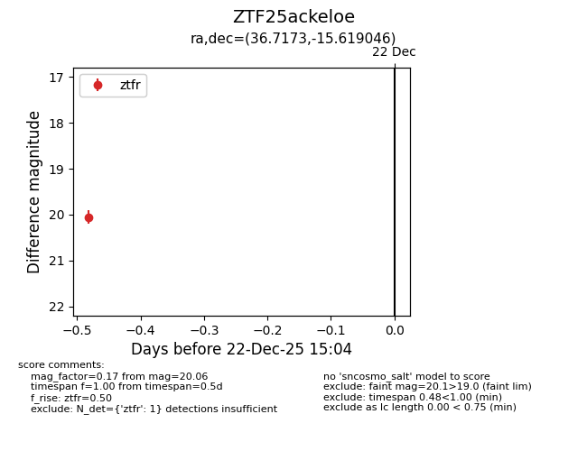
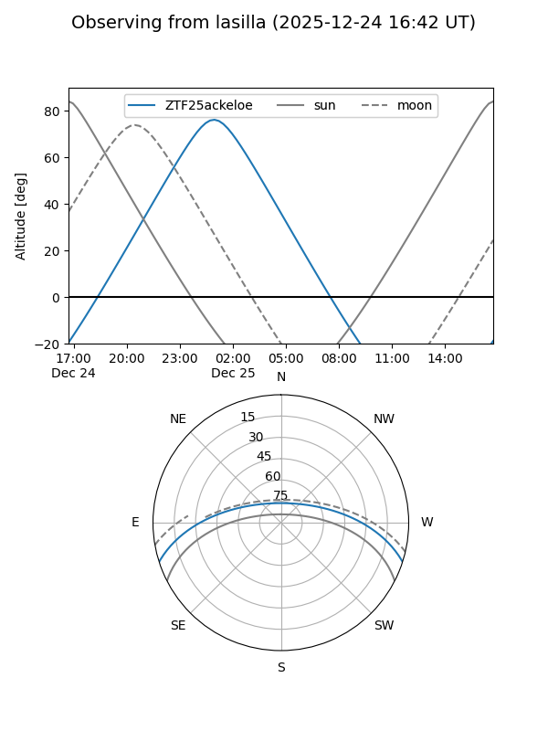
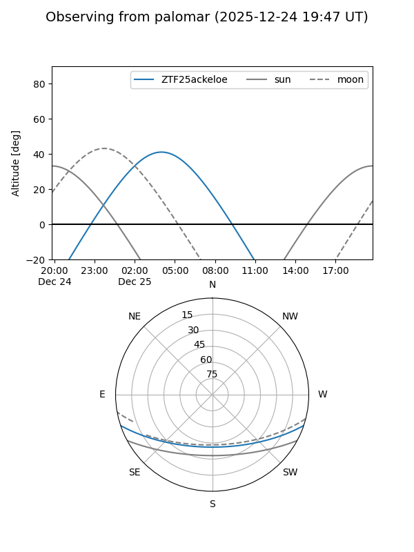

ZTF25ackeloe
Target ZTF25ackeloe at 2025-12-24 16:17
Aliases and brokers:
FINK: fink-portal.org/ZTF25ackeloe
Lasair: lasair-ztf.lsst.ac.uk/objects/ZTF25ackeloe
ALeRCE: alerce.online/object/ZTF25ackeloe
alt names
ZTF25ackeloe (ztf,fink_ztf)
Coordinates:
equatorial (ra, dec) = 36.7173,-15.61905
equatorial (HMS+DMS) = 02:26:52.15,-15:37:08.56
galactic (l, b) = (190.3501,-65.04688)
Flags:
Photometry:
last ztfr=20.06
1 ztfr detections
Lightcurve

Visibility


Additional plots